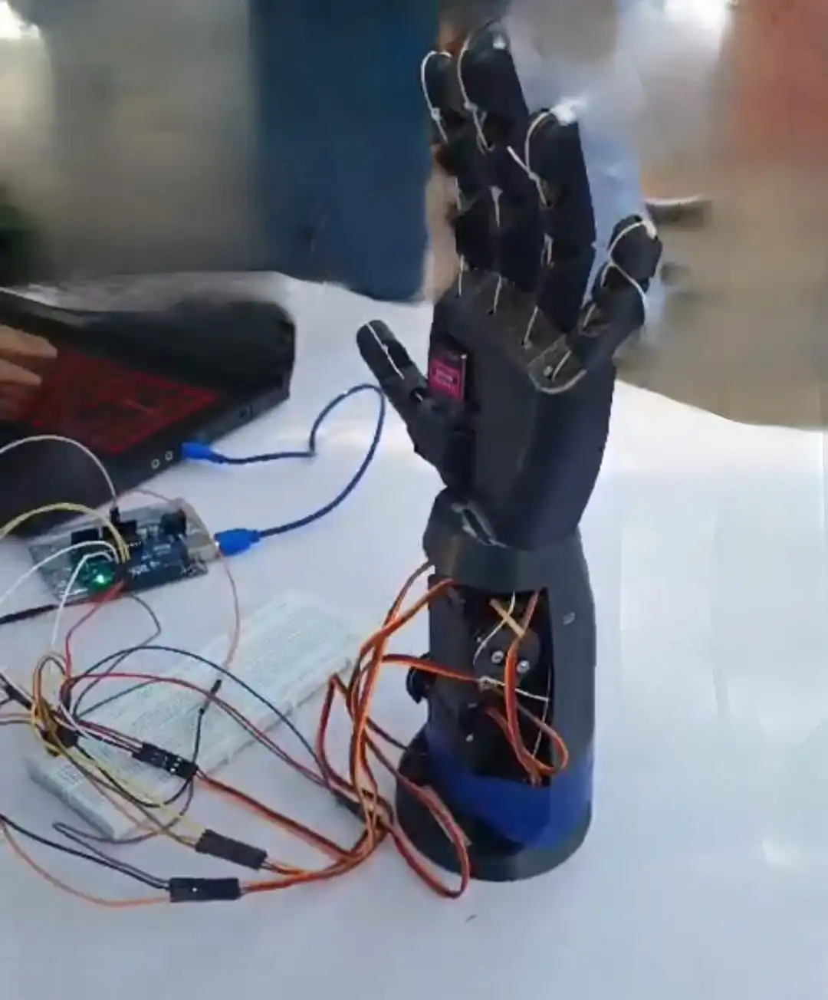
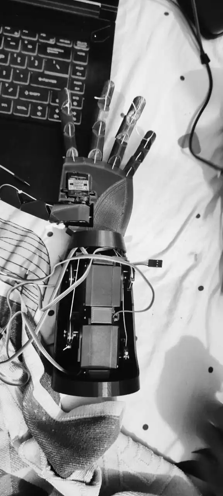
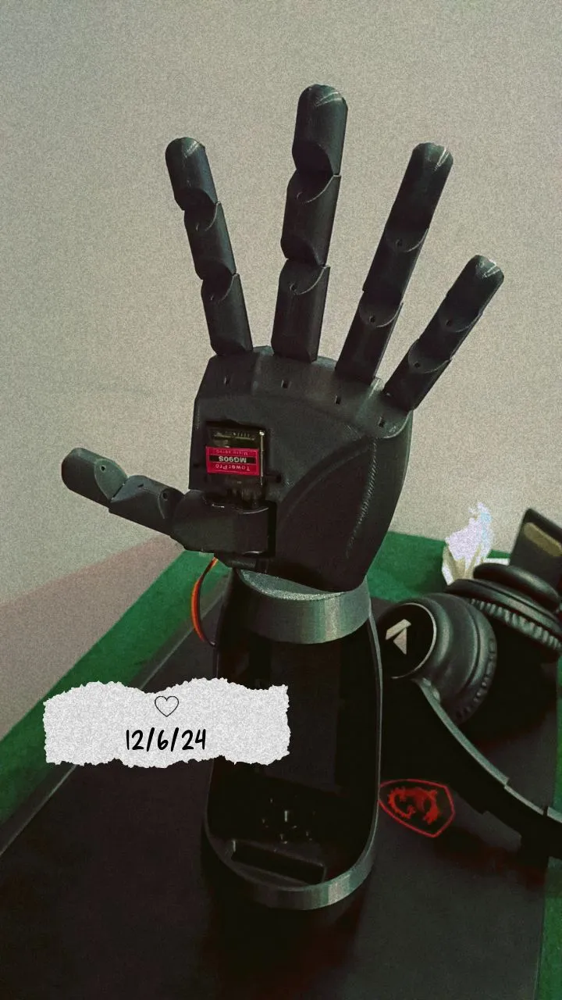

This image shows the prototype design of the bionic arm. The arm is designed to have a highly flexible structure, with precision joints that can move smoothly in all directions. The arm is equipped with sensors that allow it to detect and react to external stimuli.

The bionic arm in action. Here, we can see the arm performing a basic function like gripping an object. The arm's responsiveness is powered by advanced algorithms and motorized actuators that simulate human muscle movements.

A close-up of the bionic arm's mechanical structure. This image showcases the internal components such as the microprocessor, sensors, and wiring. The components are carefully arranged to ensure that the arm operates efficiently and with high precision.